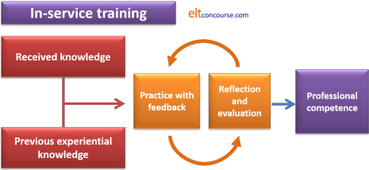

Unit 3: Types of training

Teacher training is a varied and unpredictable undertaking.
It has many purposes, a range of participant types and an array of
possible aims so it is difficult to narrow down the choices of types
of training and put them in watertight compartments.
But we'll try.
 |
Three (or so) sorts of training |
In this course we'll consider three basic sorts of training and
then, where we need to, subdivide the areas to make a bit more sense
of them.
They are:
- Initial or pre-service training
which focuses quite narrowly on equipping people with a toolbox of techniques and procedures which will allow them to provide some focused but not necessarily flexible teaching of the language.
Benchmark courses of this type include the Cambridge English CELTA scheme and the Trinity Cert TESOL both of which are taken by many hundreds of people and which are considered the minimum requirement for employment as a teacher in many settings.
Participants on such courses usually have no experience at all or only very limited experience in some settings and are looking for a course which is short, focused and practical. Neither they nor their trainers are very concerned with principle and theory. - In-service training
is more variable. It focuses on extending, enhancing and refining teaching ability in people who have already taken some form of pre-service training and have built up, often by trial and error or painful experience, a set of classroom solutions which they can deploy professionally to overcome the deficiencies of their training to date.
In a sense, this sort of training sets out to repair the problems caused by the very procedurally focused nature of initial training by filling in the theoretical gaps and getting participants to apply theory to practice in a principled way. It focuses particularly on high levels of classroom skill and behaviours as well as attempting to broaden and extend the participants' knowledge of language and methodology. Whether it succeeds is another matter.
Examples of the aims of such courses are:A ... qualification ... ideal for practitioners wishing to progress to positions in management, teacher education and examining.
or
(Trinity College DipTESOL factsheet)[the qualification] can prepare teachers for more senior teaching roles and facilitate progression to other qualifications
Another form of in-service training often takes place on short intensive courses whose aims are more difficult to define satisfactorily in terms of aims and content. Such courses are often marketed as refresher courses (although what exactly is being refreshed is often obscure) or are courses which pivot around the providing organisation's principal theoretical concerns.
(Cambridge English Delta, Handbook for Tutors and Candidates)
Many such courses provide participants with the opportunity to get out of the classroom, encounter new ideas, refresh their language skills and practice and (re)invigorate their classroom behaviour. - In-house training
is designed to meet an institution's or its teaching staff's specified needs. Such courses are rarely if ever externally recognised.
Much of the content and organisation of such training is dependent on the level of expertise and experience already present. We shall address below the demands of such programmes for both the experienced and already competent and the newly qualified who need support and consolidation of the training they have had.
This kind of training usually has some or all of three purposes:- to meet a perceived need in an organisation to provide the teaching team with the skills they need to enter new markets or develop better responses to the changing needs of their current clients
- to refresh and motivate the teaching team through a formal sharing of ideas, practice and understanding of their profession
- to build on initial, pre-service programmes which teachers have taken in order to enhance the teaching team's overall abilities and methodological flexibility.
We are not concerned here with the content of such courses
because that is covered in
Unit 2 of this course.
We are also not currently concerned with the design and delivery of
individual sessions on these sorts of courses because that forms the
topic of
Unit 4
of the course.
We are, however, concerned with investigating the manner of delivery
of the content and the structure of the training programme.
The dividing line in the types of training above lies
between area 1. and the other two because in course types 2. and 3. the assumption is that we are dealing with practitioners
currently operating as language teachers. Their needs are
fundamentally different from the needs of beginners in the
profession both quantitatively but, much more importantly,
qualitatively.
This leads to some fundamental differences concerning the nature of
the trainer's job.
Much of what follows is taken from or adapted from the guide in the
trainers section of this site and that's an area you may need to
investigate (later).
 |
Initial or pre-service training |
Initial training is premised on the fact that the majority of
participants have never taught or, if they have taught, have not
taught a language.
Most initial training on short courses involves three types of
activities:
- Demonstration
- In this, the tutor simply demonstrates the classroom
approach which is the focus of the session.
For example:- if the focus is on teaching vocabulary via a reading text, the tutor can employ a section of an article or book about reading and set the task of identifying some key terms in the text and matching them to definitions provided on a separate worksheet.
- if the focus is on teaching a tense structure, the tutor can demonstrate by introducing the use of the tense via a set of pictures and/or a timeline to explain its key function.
- if the focus is on using Dictogloss, the simplest way is clearly to do one with the trainees and then discuss with them how it worked and what skills they needed to deploy to complete the text.
- the use of teaching an unknown language to the trainees near the beginning of a course to demonstrate techniques such as modelling, drilling, correction and so on as well as alerting them to how it feels to be taught a language from scratch. This is an activity done on most initial training courses.
- Experiential learning
- This is an extension of demonstration and involves the trainees in firstly experiencing a technique pretending to be learners of the language and then doing it for themselves with their peers. The theory is that the act of using a technique one has seen demonstrated makes the activity more memorable and engaging.
- Loop input
- This term is defined and exemplified at the beginning of
Unit 1 of the course but to repeat:
Loop input is a specific type of experiential teacher training process that involves an alignment of the process and content of learning.
(Woodward, 2003:301)
There are, naturally, many other ways in which a topic can be
taught on an initial training course but the key aspect of such
courses is that the trainer (you) is, throughout, demonstrating what the
participants need to learn to do.
It is assumed, therefore, that simply lecturing people about a topic
presents a false model of what teaching should be in the classroom.
Efforts are therefore made to make the process match the content.
This is training akin to what frequently happens in commercial and
industrial settings in which an apprentice is paired with an
experienced worker and learns by deliberate copying of the more
experienced colleague's behaviour and actions. This was
originally called sitting by Nellie or exposure training
and it looks like this:

The steps are:
- Study with the master practitioner (you, in this case) and
demonstration and instruction involve:
- being shown how something is done
- being told why it's useful and effective
- being told how to do it
- Practice with feedback comes in two forms:
- Micro-teaching and peer-teaching with feedback from peers and the tutor
- Teaching practice with real learners and feedback from tutors primarily and peers secondarily
Thus competence is based on practical application with a set of volunteer learners.
Unit 2 of this course deals at some length with the different
sorts of knowledge that need to form the content of training
programmes for teachers and what we are discussing here is mostly
one part of that: procedural knowledge.
Initial courses will also, especially if the participants are native
speakers of English, have to deal with some subject knowledge but usually
at a reasonably simple level confined to word class, tense forms
and their most common uses, basic syntax, clauses and phrases and so on.
A fuller list of what be tackled is in
Unit 2.
 |
In-service training |
In-service training is different both in terms of the quantity of
what people are expected to know and the quality of the data they
are asked to master.
There is, of course, a good deal more to be learned on such courses
and included in that will be some focus on procedural knowledge.
Although participants on such courses have some basic training and
may have a good deal of experience, the procedural aspects of such
courses can now focus on much more generalised competence rather
than setting-specific competence. In other words, the focus on
procedural aspects of teaching on in-service training programmes is
to equip the trainees with truly portable skills which, because they
are based on principle rather than routine, can be adapted to almost
any teaching setting.
Participants are assumed already to have a toolbox of techniques and
procedures but now need to relate these to the reasons for their use
and thus acquire the ability to use the tools consistently and in a
principled manner.
Such people are not going to be very
impressed by being asked to copy the trainer's behaviour and apply
what they are learning to teaching their peers under supervision.
These people want to take what they learn and use it to enhance
their own effectiveness in helping learners to learn.
The form that training takes is not a matter of seeing, doing and then applying but of the application of experience and theory, reflection and constant improvement. The picture is:

The elements are:
- Received knowledge refers to:
- lectures and workshops on the course
- reading and research
- observations of other teachers
- input from colleagues, conferences, workshops, training courses and the like
- Previous experiential knowledge refers to:
- substantial (often set at a minimum of around 1200 hours of teaching) experience
- personal reflections on what was and was not effective
- the responses and success of their learners
- the content of an initial training course seen in the light of later experience
- The central boxes refer to the process of researching, preparing teaching and reflecting on teaching evaluated by the course participant and by you.
The sort of professional competence as a language teacher which emerges from a process such as this is very different from that which emerges from initial training. It is independent of setting, learners' aims, learners' characteristics and the demands of a syllabus.
 |
In-house training and development |
There is
a guide in the section for Academic Managers on this site to
setting up and running an in-house development programme so you
should consult that for more on the management of such programmes
and their implementation.
Here, we are looking at the programme from the point of view of a
trainer rather than an Academic Manager (although you may,
naturally, be both).
In-house programmes can, very broadly, be split into two main sorts
as we shall see.
 |
In-house development for experienced teachers |
In-house development, rather than training, differs from the other two forms of training.
It assumes from the outset shared concerns, considerable
setting-specific experience, varied levels of expertise, because no
teaching team is homogenous, institutional demands and generally
negotiated, or at least shared, aims for personal and institutional
development.
It looks, therefore, a bit like this:

It may look similar to in-service training but the inputs and
outputs are very different and the process which happens in the
centre is also quite different.
Your role as a trainer will accordingly be very different.
You are not demonstrating how to teach, nor are you supplying
methodological data for people to assimilate, you are not in any
kind of assessment mode and you do not need to tell people how to
research and behave.
What you do need to do is:
- Set the parameters for discussion
- Explain the institutional demands
- Gather the data on shared experiences and concerns
- Facilitate the discussion of issues (and summarise them)
- Facilitate the sharing of solutions (and summarise them)
- Identify the personal and institutional benefits
That's quite a lot to be going on with and you may add other roles and responsibilities.
 |
In-house training for inexperienced teachers |
Some in-house training is not of this nature and has more in
common with initial teacher training because the staff is
inexperienced and, possibly, newly qualified at pre-service level.
In this case, your role is much more of a trainer than a
facilitator.
A programme for teachers in this setting may be designed to provide
a bridge to more advanced, accredited qualifications (such as the
two benchmark diploma-level courses) or may be undertaken to provide
the teachers with more classroom options and some understanding of
underlying principles which will allow them to develop their
competence in a more principled manner than is allowed (or possible)
on short, pre-service courses.
For the content of such courses, you need to refer to the lists and
advice in
Unit 2 of this course.
Generally, too, this sort of in-house programme is often, and
advisedly, combined with an observation programme which is designed
in part to diagnose the areas which need the most attention.
In fact, the best way to design such courses is to begin with a
series of observations from which a prioritised list of targets for
training can be extracted.
This sort of training looks a little like the set of stages set out
in the first diagram above but with some differences because it has
two aims:
- To increase the participants' range of procedures, techniques and classroom solutions to common issues
- To consolidate the pre-service training by linking it more explicitly to theories of language and language learning which will increase the participants' ability to develop and improve their practice autonomously
The shape of training resembles:

- Inputs
- The first input is the outcome of an observation programme
ideally undertaken by the trainer or the trainer's more
experienced colleagues.
The content of the pre-service training people have received forms a key input into the training programme. You are not dealing with beginners.
On such programmes the participants will share an institutional setting (because that's in the nature of an in-house programme). - Sessions
- Training sessions should be a slight mix.
On one hand, you are endeavouring to refine and extend the participants' classroom approaches and behaviour by providing more options and building on their initial training. To do that, there will probably be some activities in sessions in which you demonstrate the techniques and procedures you know, from observation, people are poor at or don't do at all. You may also be able to access recordings of others doing it well or draw on more experienced colleagues in the organisation to do the demonstrations and explain the value of what they are doing.
Favoured topics are giving and getting feedback in different ways, monitoring and using noticing and inferencing procedures but the content will be heavily depended on what has been observed.
On the other hand, you are also concerned to tie the training to some theoretical considerations which have not been covered, at least in any depth, on a pre-service training programme. The object of this is that the participants should not only know what to do in the classroom but also have a basic idea of why they are doing it. - Outcomes
- You are aiming for two:
That the participants should be more engaging and motivating teachers because they have more options in the classroom and can deploy a variety of techniques, activity types and approaches to skills and language systems teaching which will have a positive spin-off in terms of learner motivation and enjoyment.
That the participants, armed with some theoretical understanding of what they are doing, can develop independently and research and experiment with a variety of approaches for themselves.
This sort of programme is not likely to be successful as a one-off set of three or four sessions. For it to succeed it needs to be an ongoing and routine part of in-house training.
 |
Self-evaluation |
This is all about you.
We cannot predict what kind of training you are likely to be
concerned with and it is unlikely that you can see far enough ahead
at this stage to do so in the long term either.
Short term, however, you are unlikely to be following this course
with no idea at all of where your training will be in the categories
we have identified so far.
Pick yours and then
download a worksheet, self-evaluation form.
There are no right answers to that task sheet (or to much else in the world of teacher training).
Reference:
Some of the diagrams of the patterns of training above are adapted
from or very severely adapted from:
Wallace, MJ, 1991, Training Foreign Language Teachers: a
reflective approach, Cambridge: Cambridge University Press